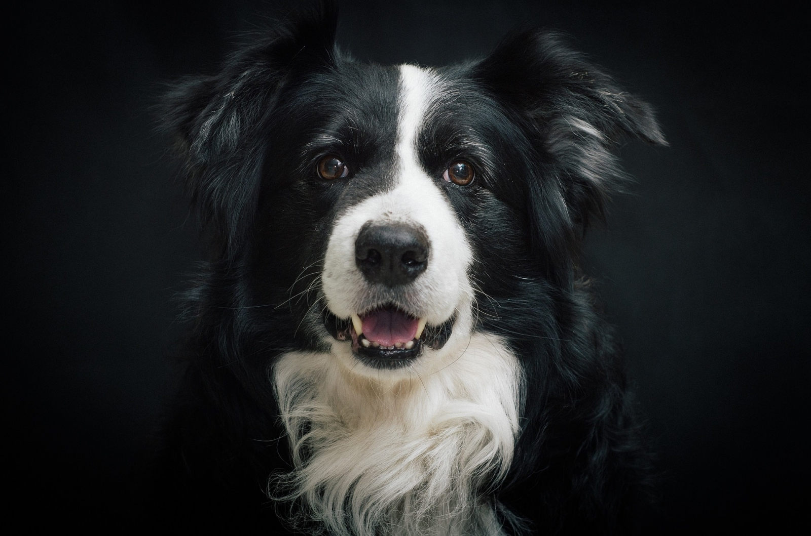
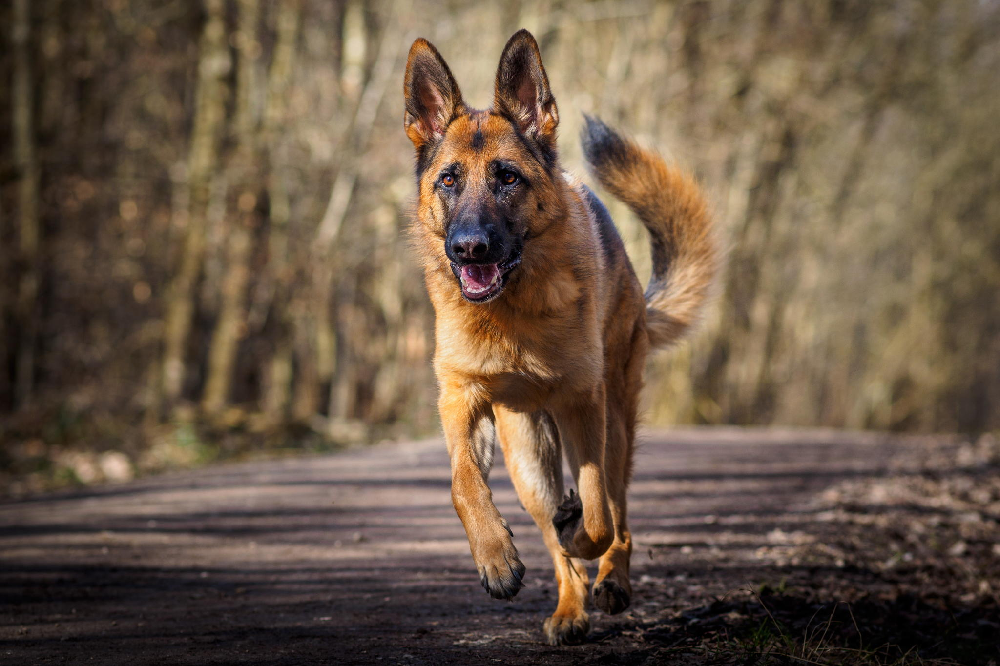
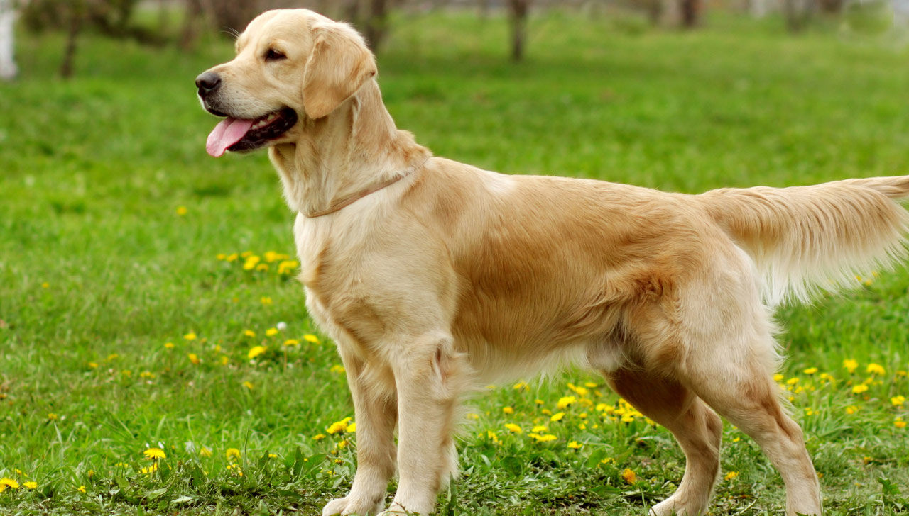
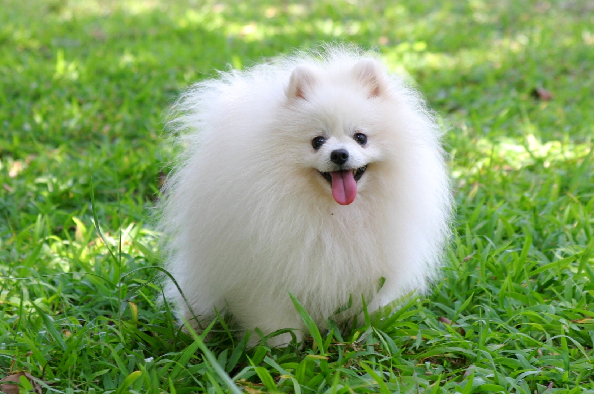

Border Collie

The border collie is a medium-sized dog that is very athletic, highly intelligent, and has loads of energy. It is known for its alert expression, strong and agile body, ready-to-go attitude, and strong instincts. The breed descends from the sheepdogs of the British Isles and is named after the border between England and Scotland. A hugely popular breed, border collies can make excellent companions for very active households. Overall, this is a much-loved and celebrated dog breed that bonds closely with fully engaged human companions.
German Shepherd

German Shepherd dog, breed of working dog developed in Germany from traditional herding and farm dogs. A strongly built and relatively long-bodied dog, the German Shepherd stands 22 to 26 inches (56 to 66 cm) tall at the withers and weighs 75 to 95 pounds (34 to 43 kg). Its dense coat consists of coarse, medium-long, straight or slightly wavy outer hair and soft short inner hair. The colour ranges from white or pale gray to black and is commonly gray and black or black and tan. Noted for intelligence, alertness, and loyalty, the German Shepherd is used as a guide dog for the blind and as a watchdog and also serves in police and military roles.
Shih Tzu

The Shih Tzu is a small but sturdy dog with a lush, long, double-hair coat. This breed's alert, confident, playful, and courageous demeanor makes it a favorite amongst toy dog enthusiasts. The Shih Tzu is an ancient breed and has a long history as a lap dog to nobles. When properly trained and cared for, Shih Tzus can make wonderful companions.
Golden Retriever

- The golden retriever is a medium-sized breed boasting a golden coat—reflective of its name— originating from Scotland.
- Known for their kind eyes, loyalty, and enthusiasm for life, the golden retriever is one of the most popular dog breeds in the United States.
- Golden retrievers make wonderful service dogs and are often very successful as guide, assistance, or search and rescue dogs.
Pomeranian

- The Pomeranian is a perky and bold toy dog breed with a long coat and distinctive neck ruff that hails from what's now Germany and Poland.
- Also called a Pom, this breed is typically friendly but can be bossy at times. Still, it is extremely loyal to its loved ones and can be an effective guard dog despite its diminutive stature.
- Pomeranians generally have a bold and lively temperament. They can act as alert watch dogs and tend to be affectionate with their owners.
Gemini Solutions
 Gemini Solutions Home Page
Gemini Solutions Home Page